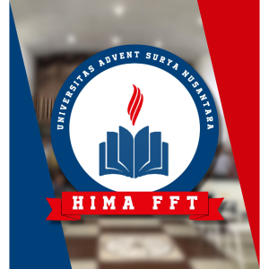

Ilmu Filsafat
Mengembangkan kemampuan berpikir reflektif, kritis, dan etis dalam memahami persoalan akademik, spiritual, dan sosial.

Tentang FFT
Fakultas Filsafat Teologi (FFT) adalah fakultas yang berfokus pada pengkajian:
Karena berada di bawah institusi “Advent”, maka secara teologis fakultas ini berafiliasi dengan ajaran Gereja Masehi Advent Hari Ketujuh.
Mengembangkan kemampuan berpikir reflektif, kritis, dan etis dalam memahami persoalan akademik, spiritual, dan sosial.
Mengkaji dasar iman Kristen, doktrin Alkitabiah, dan pemahaman teologis dalam ruang akademik yang terarah.
Membentuk literasi Alkitab, karakter pelayanan, dan kepemimpinan rohani untuk gereja serta masyarakat.
Menanamkan kepekaan moral, integritas, dan tanggung jawab berdasarkan nilai-nilai Kristen Advent.
Program Akademik
Fakultas Filsafat Teologi menyediakan program studi yang berfokus pada pembentukan pemimpin rohani, pendidik, dan pelayan masyarakat yang memiliki dasar teologi, filsafat, dan karakter Kristiani.
Sarjana
Program ini mempelajari teologi Kristen secara mendalam, meliputi doktrin Alkitab, kepemimpinan rohani, pelayanan gereja, dan pengembangan karakter spiritual.
Sarjana
Program ini mempersiapkan mahasiswa menjadi pendidik agama Kristen yang kompeten dalam pengajaran, pembinaan iman, etika, dan pelayanan pendidikan.
Fakultas Filsafat Teologi (FFT) Universitas Advent Surya Nusantara didirikan untuk mempersiapkan mahasiswa menjadi pemimpin rohani, pelayan gereja, serta pendidik yang memiliki pemahaman teologis yang mendalam dan berlandaskan nilai-nilai iman Kristen.
Dalam menghadapi perkembangan zaman, gereja dan masyarakat membutuhkan sumber daya manusia yang tidak hanya memiliki pengetahuan teologi, tetapi juga kemampuan berpikir kritis, kepemimpinan rohani, serta integritas moral yang kuat.
Oleh karena itu, FFT hadir sebagai wadah pendidikan yang memadukan kajian akademik, pembinaan spiritual, serta pengembangan karakter untuk mempersiapkan lulusan yang siap melayani di gereja, lembaga pendidikan, maupun masyarakat luas.
Menjadi fakultas yang unggul dalam pengembangan ilmu filsafat dan teologi yang berlandaskan nilai-nilai iman Kristen Advent serta menghasilkan lulusan yang berintegritas, berkarakter rohani, dan siap melayani gereja serta masyarakat.

Himpunan Mahasiswa Fakultas Filsafat Teologi (HIMA FFT) adalah organisasi kemahasiswaan yang menjadi wadah pengembangan kepemimpinan, kebersamaan, dan pelayanan mahasiswa dalam kegiatan akademik, rohani, dan sosial.
Selengkapnya...Universitas Advent Surya Nusantara
Content not available yet.
Content not available yet.
Content not available yet.
Content not available yet.
Content not available yet.
Content not available yet.
Content not available yet.